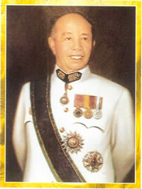
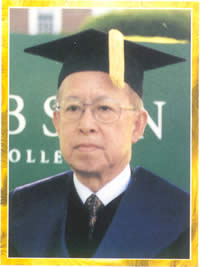
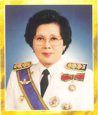
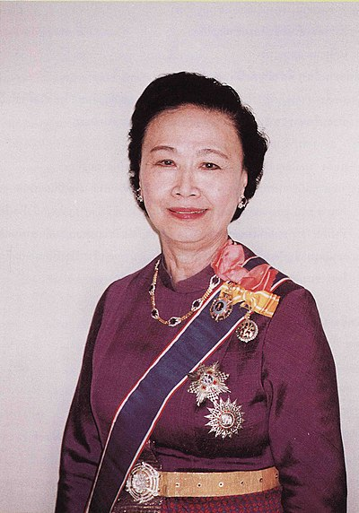

ประวัติโรงเรียนเตรียมอุดมศึกษาพัฒนาการ
โรงเรียนเตรียมอุดมศึกษาพัฒนาการ ได้รับการประกาศจัดตั้ง จากกระทรวงศึกษาธิการเมื่อ วันที่ 21 กุมภาพันธ์ พ.ศ.2521 มีชื่อเดิมว่าโรงเรียนเตรียมอุดมศึกษา2 เพื่อให้เป็นสาขาโรงเรียนเตรียมอุดมศึกษาพญาไท ทั้งนี้ คุณหญิงบุญเลื่อน เครือตราชู อดีตผู้อำนวยการ โรงเรียนเตรียมอุดมศึกษา ได้ขอที่ดินจากท่านเจ้าสัวอื้อจือเหลียง ซึ่งต่อมา นายยอดยิ่ง เอื้อวัฒนสกุล บุตรชาย ได้เป็นผู้โอนกรรมสิทธิ์ที่ดินจำนวน 38 ไร่ ให้กรมสามัญศึกษา กระทรวงศึกษาธิการ เพื่อสร้างโรงเรียนเตรียมอุดมศึกษาพัฒนาการ เมื่อคุณหญิงบุญเลื่อน เครือตราชู ไปดำรงตำแหน่งรองอธิบดีกรมสามัญศึกษา คุณหญิงสุชาดา ถิระวัฒน์ ย้ายมาดำรงตำแหน่ง ผู้อำนวยการโรงเรียนเตรียมอุดมศึกษา ท่านได้ดำเนินการจัดตั้งสาขา โรงเรียนเตรียมอุดมศึกษาขึ้น รวมทั้งได้วางแผน และ ขออนุมัติก่อสร้างอาคารต่างๆ โรงเรียนเตรียมอุดมศึกษาพัฒนาการ เริ่มรับนักเรียนชั้น ม.1 จำนวน 12 ห้องเรียน ในปีการศึกษา 2521 โดยอาศัยเรียนที่โรงเรียนเตรียมอุดมศึกษาพญาไท ปีต่อมา จึงได้ย้ายมาเรียนในสถานที่ปัจจุบันในปีเดียวกันนี้ (9 พฤศจิกายน 2522) กรมสามัญศึกษาได้ประกาศ เปลียนชื่อโรงเรียนเตรียมอุดมศึกษา2 เป็น โรงเรียนเตรียมอุดมศึกษาพัฒนาการ และได้รับพระราชทาน พระบรมราชานุญาต ให้ใช้ตราพระเกี้ยวเป็นสัญลักษณ์ประจำโรงเรียน เช่นเดียวกับ โรงเรียนเตรียมอุดมศึกษา และมีปรัชญาของโรงเรียนคือ "ความเป็นเลิศทางวิชาการ และคุณธรรม"

ท่านอื้อจือเหลียง
ผู้มอบที่ดินให้สร้างโรงเรียน

นายยอดยิ่ง เอื้อวัฒนสกุล
บุตรนายอื้อจือเหลียง
ผู้มีอุปการะคุณต่อโรงเรียน

คุณหญิงบุญเลื่อน เครือตราชู
ผู้ก่อตั้งโรงเรียน
